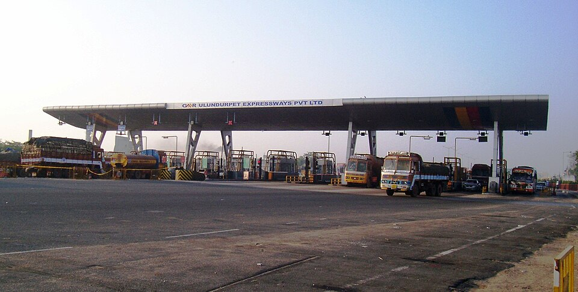
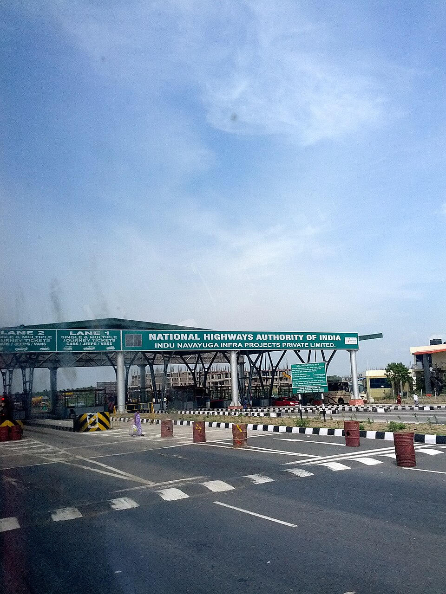

🛣 Chennai · Tamil Nadu · ~510–530 km via Trichy
Road conditions, verified toll charges, and honest pit stop reviews for the NH45 route — so you know exactly what to expect before you leave your parking spot in Chennai.
Introduction
The standard road route from Chennai to Kodaikanal via Trichy covers roughly 510–530 km depending on your starting point in the city. Most of the journey runs on NH45 (now renumbered as NH83 on the Trichy–Dindigul section in official NHAI records) — a four-lane national highway that handles this route well for the bulk of the distance. The last 36 km from Batlagundu up to Kodaikanal is the ghat road, which is a completely different kind of driving.
This is also one of the few major South Indian highway routes where you can find a genuine traveller-reviewed breakfast stop at exactly the right distance (Perambalur, 273 km from Chennai), a historically significant temple town in the middle (Trichy / Tiruchirappalli at around 330 km), good biryani in Dindigul before the climb, and then the ghat. It's a route with natural break points built into it.
What travellers frequently get wrong on this route: underestimating the time impact of Trichy city traffic, not having cash ready for the Ponnambalapatti toll (the only confirmed NHAI toll plaza on the Trichy–Dindigul stretch with published rates), and attempting the ghat after dark — especially on the return leg. This guide addresses all three directly.
Quick Stats
Distance figures: Savaari Chennai–Trichy (Nov 2024) · The Carlton — Trichy to Kodaikanal
Route Overview
The full route — Chennai → Villupuram → Perambalur → Trichy → Dindigul → Batlagundu → Kodaikanal — follows NH45 for most of the distance, switching to NH83 (Trichy–Dindigul section) and then the Kodaikanal Ghat Road from Batlagundu.
Road Conditions
Good This section runs on the GST Road (Grand Southern Trunk Road / NH45) out of Chennai. Four-lane divided highway from Guindy to Villupuram. Road surface is generally good with periodic patching near toll plazas. Vandalur to Chengalpattu is well-maintained. Villupuram itself has a short urban stretch.

Good The highway continues four-lane south from Villupuram through Ulundurpet, Jayamkondam, and Perambalur. This is one of the smoothest sections of the route — flat terrain, good signage in both Tamil and English, consistent lane markings. The Ulundurpet–Trichy corridor (NH45) is well-maintained as part of the Chennai–Madurai corridor upgrades.
Road condition reference: Venkatarangan.com — Chennai Trichy highway food stops (Aug 2025) · Savaari — Chennai to Trichy road conditions
GoodTrichy city: variable After the Trichy bypass, the highway transitions onto the Trichy–Dindigul stretch (NH45, KM 382) — an 87.27 km tollable length maintained under the NHAI BOT concession with the Ponnambalapatti toll plaza at around KM 382.85. Road is generally four-lane and in good condition. The bypass itself is well-marked.
If you take the city detour to visit Rockfort or Srirangam, expect congested two-lane roads in the older parts of Trichy city. This adds 40–60 minutes depending on time of day. Not a road quality issue — just urban traffic.
Source: NHAI Toll Information System — Ponnambalapatti Plaza (ID 239)
Good Short stretch of state highway / national highway connecting Dindigul bypass to Batlagundu at the ghat base. Road is decent. The Dindigul bypass can be busy in the mornings. Fuel up here — there are no petrol bunks between Batlagundu and Kodaikanal town.
ModerateMonsoon: use extra caution The ghat road from Batlagundu to Kodaikanal is 36 km of mountain driving. Road surface is generally maintained but develops potholes in the monsoon season. The road narrows to two lanes — sometimes tighter — with hairpin bends, steep gradients, and exposed drops on one side. Speed limit on bend sections is 30 km/h.
Toll Information
The route has 5–7 toll plazas one-way depending on your exact path through Chennai and Trichy. Listed below are the confirmed NHAI plazas on this corridor with official sources where available. FASTag is mandatory at all NHAI plazas — without it, you pay double the cash rate.

Total one-way toll estimate (car/sedan): approximately ₹400–₹600, varying by vehicle category, exact path through Chennai, and whether you use Trichy city or bypass. Round trip: ₹800–₹1,200.
FASTag is mandatory on all NHAI plazas since Feb 2021. Cash lane charges double the FASTag rate. Ensure FASTag balance is at least ₹800 before departure. There are no re-load facilities on the ghat road.
Official toll data: NHAI TIS — Ponnambalapatti (ID 239) · NHAI Tamil Nadu toll plaza list (PDF) · TollGuru Tamil Nadu Toll Roads Guide (2025)
Pit Stops
These stops are listed because they have documented traveller reviews, known addresses, and a consistent track record — not because they're "famous" highway names. Reviews are quoted with source and date to show you they're real.
Why it makes the list: It's the most consistently recommended stop in the 250–280 km zone from Chennai on the Trichy highway. A travel blogger who photographed the restaurant in Feb 2022 describes it as having "spacious air-conditioned seating, clean restrooms, and tasty food" with "North Indian, South Indian, and even some Chinese dishes" — broader than most highway restaurants. A lift to the first floor makes it one of the few highway stops accessible to elderly passengers without a stair struggle.
What regulars say: "Pongal is their signature dish. Everything was excellent." (Google review, verified). "One of the hygiene restaurants on Chennai–Trichy highway … clean wash room facility, exclusive air-conditioned restaurant, ample parking space." (TripAdvisor). One reviewer noted they'd been stopping here for 7 years.
Sources: Venkatarangan.com — Tried and Tested Veg Stops (Aug 2025) · TripAdvisor — Aswins (42 reviews)
Frequently cited on Quora and travel forums as a good early stop for travellers who leave Chennai at 4:30–5 AM and want to eat by 6–7 AM. The recommendation appears specifically for southbound travellers heading towards Trichy. Serves standard South Indian breakfast. Limited documented reviews compared to Aswins — but location is right for early departures who prefer not to eat past Perambalur.
Dindigul biryani is a specific style — drier, smaller-grained (seeraga samba rice), spicier, and distinct from Hyderabadi or Ambur varieties. Thalappakatti is the original chain that popularised the Dindigul style nationally. The restaurant on the Dindigul main road is consistently mentioned across multiple road trip guides for this route — Savaari, The Carlton, and several individual blogger accounts — as the lunch stop before the ghat.
This is also where you should fill your tank completely. There are no petrol bunks between Batlagundu and Kodaikanal town. Don't skip the fuel stop here.
If you're visiting Trichy as a stop and not just passing through, the two main attractions are the Rockfort Ucchi Pillayar Temple (climb to the top takes 30–40 min) and the Sri Ranganathaswamy Temple at Srirangam — one of the largest functioning Hindu temple complexes in the world. Both are close together and worth a morning stop if you've left early enough from Chennai to have time.
From a TripAdvisor contributor: "The precincts are beautiful, some of them with many ornate pillars. The sanctum of the temple is dedicated to Lord Jambukeshwarar and is a small space where not more than 5 people can stand at a time." (Wanderlog/TripAdvisor composite from Tiruchirappalli attractions).
The section where preparation matters most. Read this before Batlagundu.
At Batlagundu: fill petrol if you didn't in Dindigul (last chance). Pay the green tax in cash (₹50–₹150 depending on vehicle type). Have your e-pass QR code accessible offline on your phone. The green tax and e-pass are two separate checks — don't confuse them. Download your QR before entering Batlagundu; signal gets patchy on the ghat.
Keep speed below 30 km/h at hairpin sections. Use low gear on steep gradients rather than riding the brake. Don't overtake on blind bends — the road is two-way and vehicles do come the other direction. Larger vehicles (trucks, tempo travellers) have the right of way on narrow sections because they physically cannot reverse. Give way proactively.
Engine braking is essential on the return descent. Sustained brake use on a 36 km mountain descent causes brake fade — a genuine risk. Shift to 2nd or 3rd gear and let the engine slow the car. Reserve brakes for actual stopping. Check brake temperature at Batlagundu before re-joining the highway.
July–September monsoon brings fog, wet roads, and occasional landslip debris near the upper hairpin sections. Visibility can drop to under 20 metres. Use headlights and fog lights. Don't attempt the ghat after dark during monsoon months — halt at Dindigul and do it the next morning. Outside monsoon, clear-condition night driving is manageable for experienced drivers but not recommended for first-timers on this road.
Planning Your Drive
Chennai is a big city and the GST Road / Guindy exit has a predictable rush hour window. Departure timing has a significant knock-on effect on when you reach the ghat.
FAQ
Final Notes
The Chennai–Trichy–Kodaikanal drive is long but not complicated. NH45 is a well-maintained highway corridor. The ghat is 36 km of mountain driving that rewards patience and preparation. The three things that separate a smooth trip from a stressed one: leaving before 5:30 AM, stopping at Dindigul for both lunch and a full tank, and having the e-pass QR downloaded offline before you leave the city.
Everything else — the Aswins breakfast at Perambalur, the Rockfort view if you have time, the Silver Cascade Falls on the ghat — those are the parts of the drive that make it worth it.
Back to Quick Stats ↑